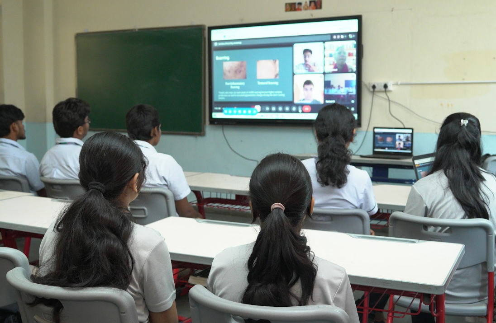

April 2026
ADI, Skinapse Labs & Intelli Schools
This April, I formed a partnership between my nonprofit, ADI, my venture, Skinapse, and Intelli Schools in Visakhapatnam, India, to teach adolescent students about their skin health. Together we discussed the challenges specific to darker skin tones and how to address them, and we got to see firsthand how our image detection models performed on a new demographic.